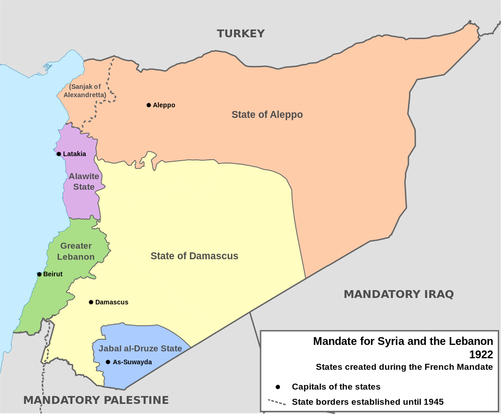

French Syrian States (Levant States)
French mandate
- Under the French Mandate, France was responsible for creating an controlling a government
- They were to develop the government and the country until it was ready for independence and self-government
- The French helped to develop roads, plan towns, encourage agriculture, and create schools (such as the University of Damascus)
- Thus, they set local governments: an Alawite state, a Druze state, and a Syrian state (with capital of Damascus)
- The states were set up by French General Gouraud with the idea being to divide the Syrian population in order to make them easier to control
- However, the French faces difficulties in preparing Syria for self-government because they wanted long term control of Syria and didn't want to betray the local Christians by giving Syria away to the Muslims
- Thus, the minorities in Syria wanted the French to stay and construct a modern government while the majority (educated elites mainly) wanted Syrian independence and for it to include Lebanon, Palestine, and Transjordan
- By 1923, the French finally gained control over the Syrian populations

Alawite State
- In 1919, the Arabs in the Alawite region revolted against the French but were finally crushed by 1921
- In 1922, the French erected the Alawite state
- The Alawite state was located in modern day Latakia and Tartus
- The majority of the population was made up of rural Alawites: Arab ethnoreligious group that follow Alawism (splinter group of Shia Islam)
- In 1922 they joined the Syrian federation but then left in 1924 and later became the Government of Latakia in 1930
- In 1925, during the Druze revolt in 1925, the Alawites were largely uninvolved
- This is because the Alawites did not care as much about Syrian unity as the Sunnis and Druze in the other states
- Finally, in 1936, Latakia joined the Syrian Repiblic government and saw little resistance to the move
Druze State
- In May 1921, the State of Souaida was established for the Druze population in southern Syria, with As-Sawayda as its capital
- A majority of the populaiton is made up of Druze (Arabic-speaking Abrahamic ethnic religion)
- In 1925, the Syrian Revolution broke out in the Druze State under sultan al-Atrash
- The revolt broke out due to protest against Syria being split into states and anti-colonialism
- In 1927, it was renamed Jabal al-Druze
- In 1936, the Druze State was incorporated into the State of Syria as the result of Syrian nationalist pressure following the revolt
Syrian State
- The Syrian region was ruled by the Syrian Federation (1922-1924), the State of Syria (1925-1930), and the Mandatory Syrian Republic (1930-1946)
- The Syrian state consisted of the state of Damascus and the state of Aleppo
- In 1920, after the creation of the Alawite state, the Government of Damascus and the Government of Aleppo were created
- The state of Aleppo and the state of Damascus were both created in September 1920
- The state of Aleppo was mainly Sunni Muslims but also Jews and Christians
- The state of Damascus was mostly Sunni but also had Christians and a number of foreigners
- In 1922, the Syrian Federation was formed by Gouraud and included Damascus, Aleppo, and the Alawite state (later left in 1924) due to Sunni opposition to the division of Syria
- In 1923, the autonomous State of Alexandretta was incorporated into the State of Aleppo
- In 1925, the State of Aleppo and the State of Damascus (Syrian Federation) became the State of Syria
Sources: [
1
,
2
,
3
,
4
,
5
,
6
]